镇定学习工具箱
基于可学习度量与 Lyapunov 候选函数的控制学习工具箱。统一 Env、 Algo、Runner 三层，覆盖状态控制、轨迹跟踪、观测器、 视觉伺服与接触推动。
物理与任务
状态、观测、动作边界、真实转移、成功与终止判据。9 个注册任务，另有 RGB、观测器、圆盘、网格和 SO101 专用环境。
度量与控制
表征、正定度量 M、策略、Critic、损失与优化器。支持模型梯度、PPO、离散 SAC、解析控制和 RGB 变体。
训练与报告
preflight、采样、预热、更新、验证、冻结、独立测试、快照和报告。每个实验使用独立输出目录。
共同数学对象
所有任务共享同一个候选函数结构：在误差或特征坐标中学习正定度量 M，用它构造二次型候选函数，并记录一步下降量。
模型梯度、PPO、离散 SAC 或解析交互矩阵把 M 转成控制量；闭环样本再用来更新表征、度量或性能估计器。RGB 书稿实现使用带系数的形式：
V 是候选函数，不是全局稳定性证明；训练和报告关注物理误差、到达时间、输入成本与真实 V 变化。
架构：Env、Algo、Runner
仓库把物理环境、学习算法与实验调度分开。Env 不依赖学习库；Algo 不负责采样流程；Runner 负责把两者接起来，并保存完整的实验记录。
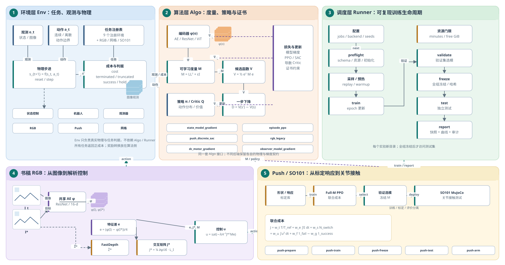
M、候选函数与下降量；
3 调度层：preflight → 训练 → 冻结 → 测试 → 报告；4 书稿 RGB：图像 → AE → 特征差 → FastDepth/交互矩阵 → 控制；
5 Push/SO101：标定响应 → Full-M PPO → 冻结 M → MuJoCo 接触。
打开原图。
preflight → 采样 → 预热 → 更新 → 验证 → 冻结 → 测试 → 报告
stabilization-gym
物理转移、观测、动作边界、成功与终止判据。
stabilization-learning-control
表征、M、策略、Critic、损失与优化器。
| 层 | 职责 | 代码 |
|---|---|---|
| Env | 状态转移、观测、动作界限、终止与保持判据 | stabilization-gym/stabilization_gym |
| Algo | 特征、M、策略、Critic、损失与优化器 | stabilization-learning-control/stabilization_learning |
| Runner | 采样、预热、训练、验证、冻结、测试与保存 | extensions/reproducible_training_v4 等 |
| 入口 | 命令行与具体实验配置 | scripts/、configs/ |
环境
9 个环境可以通过 stabilization_gym.make(...) 直接创建；书稿专用任务通过各自的 Runner 或适配器使用。
注册环境
| 注册名 | 物理任务 | 类型 | 书稿 |
|---|---|---|---|
coupled_linear | 双质量耦合线性镇定 | 状态控制 | 第 2、6 章 |
point_mass | 二维双积分器 | 状态控制 | 第 2、6、8、11 章 |
pendulum | 力矩驱动倒立摆局部镇定 | 状态控制 | 第 2、6 章 |
cartpole | 全状态车摆局部镇定 | 状态控制 | 第 2、6 章 |
two_link_arm | 平面双连杆关节定位 | 机器人 | 第 2、6、8 章 |
unicycle_tracking | 非完整独轮车圆轨迹跟踪 | 跟踪 | 第 2、6 章 |
multirotor_tracking | 平面多旋翼悬停 / 圆轨迹 | 机器人 | 第 2、5、6 章 |
push_any_shape | 标定响应模型上的通用 Push | 接触推动 | 第 14 章 |
visual_servo | 自生成纹理 + DCT 特征轻量伺服 | 视觉伺服 | 第 10、13 章 |
专用任务
| 任务 | 代码 | 学习 / 运行路径 |
|---|---|---|
| 室内 RGB 伺服 | envs/tasks/rgb_book_physical.py、original_visual_online.py | RGB 书稿 Runner / scratch RGB |
| 观测器：电机速度 | observation/environment.py，motor_speed | 观测 v5 / observer_model_gradient |
| 观测器：车摆输出 | cartpole_output | 观测 v5 |
| 观测器：合作位姿 | cooperative_pose（13 维） | 观测 v5 |
| 直流电机状态控制 | extensions/state_conditioned_m_v1/envs/dc_motor.py | dc_motor_gradient |
| 一维圆盘推动 | extensions/book_disk_overnight_v1/env.py | known model / direct D / identified / GMM-D |
| 95 状态网格 MDP | extensions/book_grid_overnight_v1/env.py | 表格策略迭代 / hitting certificate |
| SO101 关节接触 | extensions/joint_certificate_v2/arm.py | 冻结 M 在 MuJoCo 中执行 |
visual_servo 是 DCT 轻量任务；书稿室内 RGB 使用 AE、FastDepth 和专用 Runner，两者的观测与控制链路不同。
任务示意图
从简单的双积分器到视觉伺服和接触推动，所有任务共享同一套 Env / Algo / Runner 接口。点击卡片进入对应配方。
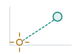
质点 / 双积分器
状态控制、D 学习与最小可复现实验的基础系统。
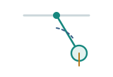
倒立摆
力矩驱动，局部镇定；用于比较不同度量与控制构造。
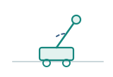
车摆
全状态局部镇定；输出反馈另走观测器任务。
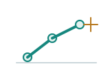
平面双连杆
关节定位；模型梯度与回合 PPO 都可使用。
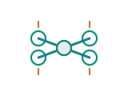
多旋翼
平面悬停与圆轨迹跟踪；机器人基准的一类。
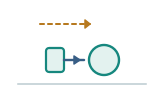
圆盘推动
已知模型、直接 D、辨识模型与 GMM-D 的四路线示例。
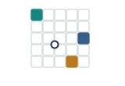
95 状态网格
有限 MDP 的表格策略迭代、目标与陷阱统计。
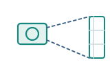
室内 RGB
AE 特征 + FastDepth + 目标处交互矩阵的解析伺服。
观测器
电机速度、车摆输出、合作位姿；学习观测度量。
SO101 接触
冻结 Push 模型，在 MuJoCo 关节接触中执行。
算法
统一 v4 目前注册 6 个核心后端；另有 Full-M PPO、D 学习 / GMM-D、RGB Actor-Critic 和视觉基础模型对照等研究算法。
统一 v4 核心后端
| 后端名 | 核心类 / 实现 | 更新依据 | 典型任务 |
|---|---|---|---|
state_model_gradient | StateModelGradientLearner / FullHorizonMetricLearner | 可微模型传播完整时域成本，更新 M / 策略 | 状态控制、观测器 |
observer_model_gradient | ObserverModelGradientLearner | 观测模型 + 估计误差 | 三个观测任务 |
episode_ppo | StabilizationLearner（metric PPO） | 采样回合，PPO 更新策略与价值 | 机器人、联合 Push |
push_discrete_sac | Push 离散 SAC 后端 | 候选动作 Q + 熵正则 | Push-SAC、E13 类任务 |
dc_motor_gradient | DC motor 状态相关 M | 模型梯度 | 直流电机状态控制 |
rgb_legacy | RGB 书稿后端 | AE 表征 + 导数 Critic + M | 室内 RGB 解析伺服 |
专用 / 模型型算法
| 算法 | 实现 | 说明 |
|---|---|---|
native_full_m_ppo | algos/pytorch/full_m_ppo/trainer.py | 随机 Full-M Actor / Critic，联合时间、误差、切换、输入成本；用于 PushAnyShape / SO101 |
| 已知模型 | book_disk | 用已知动力学直接构造控制 |
| 直接 D 学习 | book_disk | 学习下降量 D，不显式辨识模型 |
| 辨识模型 + D | book_disk | 先辨识参数 / 模型，再学习 D |
| GMM-D | book_disk | 高斯混合局部模型 + D；目前只有一维圆盘 |
| 表格策略迭代 | book_grid | 95 状态有限 MDP；hitting certificate |
| L 学习 | algos/model_based/contracts.py | 拉格朗日动力学学习；接口已就绪，v4 后端待实现 |
RGB 研究变体
| 路径 | 内容 |
|---|---|
rgb_scratch_ac_v1/v2 | 从随机 AE、M、Critic 学习 RGB Actor-Critic |
rgb_pretrained_ac_v1 | 载入预训练 AE 的 Actor-Critic |
rgb_book_reproduction_v1 | 对齐书稿室内 RGB 流程 |
rgb_foundation_v1 | VIP / DINOv2 特征 + 光度交互矩阵 + 解析控制 |
rgb_vip_photometric_v1、rgb_dinov2_photometric_v1 | 两种预训练特征的闭环对照 |
rgb_cost_m_v2、rgb_stable_m_v1、rgb_eta_return_v1、rgb_longroll_v1 | M 消融、长时域、证书回放和诊断变体 |
安装
git clone <repo> && cd stabilization-learning
python -m venv .venv
source .venv/bin/activate # Windows: .\.venv\Scripts\Activate.ps1
python -m pip install -U pip
python -m pip install -r requirements.txt
python -m pip install -r requirements-dev.txt
python -m stabilization_learning list需要仿真
MuJoCo 接触任务再安装：
python -m pip install -r requirements-simulation.txt需要 GPU
先按 PyTorch 官方说明安装与本机驱动匹配的 CUDA 版本，再安装本项目。
验证
python -m pytest -q
python scripts/check_publication.pypython -m stabilization_learning list 应列出所有注册任务。
快速开始：质点训练与配对评价
先跑最短的免外部资产流程，确认安装、接口和输出目录都正常。
python -m stabilization_learning train \
--config configs/public/point_mass_smoke.json \
--output runs/point_mass_demo
python -m stabilization_learning evaluate \
--run runs/point_mass_demo --seeds 20001 20002产物
model.pt与训练历史evaluation.json- 同一组起点上比较学习
M与单位M
换成自己的实验
- 复制
point_mass_smoke.json - 改
epochs、episodes、seed - 输出目录用新名称
point_mass_smoke.json 只有 4 条训练回合；要观察训练效果，换成更长的预算。
Python API
需要自定义采样、损失或诊断时，可以直接调用 Env 与 Algo。
from stabilization_gym import make
from stabilization_learning import StabilizationLearner, TrainConfig
env = make("point_mass", max_steps=50)
learner = StabilizationLearner(
env,
config=TrainConfig(episodes=4, batch_episodes=2, epochs=1),
env_id="point_mass",
env_kwargs={"max_steps": 50},
)
learner.train("runs/point_mass_api")
env.close()正式多种子、多任务实验仍建议使用统一的 Runner：它负责冻结、独立测试、快照和报告。
统一 v4 工作流
统一 Runner 把一次实验拆成固定阶段。每个实验使用新的输出目录；测试发生在全组模型冻结之后。
jobs[]、backend、任务、种子、预算与测试变体。preflight
python scripts/run_unified_training_v4.py preflight \
--config configs/public/unified_cpu_smoke.json \
--output runs/v4_preflight.jsontrain
python scripts/run_unified_training_v4.py train \
--config configs/public/unified_cpu_smoke.json \
--output runs/v4_demo快照与报告
python scripts/capture_linux_run_snapshot.py \
--run runs/v4_demo --output runs/v4_process.json
python scripts/run_unified_training_v4.py report \
--root runs/v4_demo --output runs/v4_report \
--process-snapshot runs/v4_process.json --compact--compact 无损压缩曲线，不删除模型或原始记录。报告通常包含 selected、initial、identity、fixed_M 等测试变体。
配置怎么写
一个最小 unified v4 配置：
{
"schema": "unified_training_v4",
"maximum_minutes": 60,
"minimum_free_gib": 5,
"jobs": [{
"id": "state_point_mass",
"backend": "state_model_gradient",
"config": {
"task": "point_mass",
"seed": 41,
"total_updates": 256,
"batch_size": 16,
"hidden": 64,
"scales": [1.0],
"validation_seeds": [10001],
"test_seeds": [20001],
"physical": {"max_steps": 50}
},
"schedule": {"epochs": 8, "certificate_updates": 1}
}]
}| 字段 | 作用 |
|---|---|
schema | 固定为 unified_training_v4 |
maximum_minutes / minimum_free_gib | 整组实验的时间与磁盘资源门限 |
jobs[] | 一个任务一个 job；多个 job 共享资源门限 |
backend | 选择算法后端，如 state_model_gradient、episode_ppo、rgb_legacy |
config | 任务名、种子、更新数、batch、hidden、初态尺度、物理步数 |
schedule | epoch 数、表征/Critic 预热、证书更新次数 |
test_variants | 可选：selected、initial、identity、fixed_M |
任务配方
每个配方都使用新的输出目录。先用 smoke 配置验证链路，再换成长预算。
状态控制
cp configs/public/unified_cpu_smoke.json /tmp/my_state.json
# 改 task / seed / total_updates / scales / physical.max_steps
python scripts/run_unified_training_v4.py preflight \
--config /tmp/my_state.json --output runs/my_state_preflight.json
python scripts/run_unified_training_v4.py train \
--config /tmp/my_state.json --output runs/my_state常用任务：coupled_linear、point_mass、pendulum、cartpole。多初态尺度用 scales: [1.0, 1.5, 2.0]；测试变体用 selected、initial、identity、fixed_M。
观测器
python scripts/run_observer_training_v5.py preflight \
--config configs/public/observer_cpu_smoke.json \
--output runs/obs_preflight.json
python scripts/run_observer_training_v5.py train \
--config configs/public/observer_cpu_smoke.json \
--output runs/obs_demo
python scripts/run_observer_training_v5.py doctor \
--config configs/public/observer_cpu_smoke.json \
--output runs/obs_doctor.json三个任务：motor_speed、cartpole_output、cooperative_pose。每个 job 可单独设置 scenarios、validation_scenarios、test_scenarios。
机器人 / 轨迹跟踪
# 在配置中把 backend 改为 episode_ppo
# task 改为 two_link_arm / unicycle_tracking / multirotor_tracking
python scripts/run_unified_training_v4.py preflight \
--config /tmp/my_robot.json --output runs/robot_preflight.json
python scripts/run_unified_training_v4.py train \
--config /tmp/my_robot.json --output runs/my_robot主要参数：updates、num_envs、epochs、minibatch、learning_rate。配置模板在 configs/unified_training_v1/ 与 configs/public/。
Push / SO101 联合成本
CLI=scripts/run_joint_certificate_v2.py
python "$CLI" push-prepare --output runs/calibration --max-hours 2
python "$CLI" push-train \
--config configs/joint_certificate_v2/push_overnight.json \
--costs configs/joint_certificate_v2/push_costs.json \
--time-bank runs/calibration/time_bank.json \
--output runs/demo_push/train --max-hours 4
python "$CLI" push-freeze --runs runs/demo_push/train \
--seeds 81 --output runs/demo_push/group.json --max-hours 0.1
python "$CLI" push-test --run runs/demo_push/train \
--group-manifest runs/demo_push/group.json \
--output runs/demo_push/test --repeats 16 --max-hours 1
python "$CLI" push-arm --run runs/demo_push/train \
--group-manifest runs/demo_push/group.json \
--output runs/demo_push/arm --repeats 4 --max-hours 2顺序：push-prepare → push-train → push-freeze → push-test / push-arm。多 seed 时先一次冻结，再分别测试。降阶 Push 用 push-test；SO101 关节接触用 push-arm。
书稿室内 RGB
python scripts/run_rgb_book_reproduction_v1.py validate \
--config configs/rgb_book_reproduction_v1/engineering_smoke.json
python scripts/run_rgb_book_reproduction_v1.py train \
--config configs/rgb_book_reproduction_v1/seed41_book.json \
--output runs/rgb_book_demo
python scripts/run_rgb_book_reproduction_v1.py report \
--root runs/rgb_book_demo --output runs/rgb_book_report \
--process-snapshot runs/rgb_process.json先 validate 检查资源、权重、场景与配置，再 train。需要 AE 初始化、FastDepth、场景包与参考缓存；准备方式见 docs/ASSETS.md。
Scratch：从头 Push / SO101 / RGB
python scripts/run_scratch_applications_v1.py prepare \
--config configs/scratch_applications_v1.json \
--output runs/scratch_demo --smoke
python scripts/run_scratch_applications_v1.py run --run runs/scratch_demo
python scripts/run_scratch_applications_v1.py stage \
--run runs/scratch_demo --stage push --seed 71
python scripts/run_scratch_applications_v1.py report --run runs/scratch_demo
python scripts/run_scratch_applications_v1.py deploy \
--bundle runs/scratch_demo/bundle --shape CWide --seed 71prepare 生成运行计划与资源清单；run 按 push → so101 → rgb 顺序执行；stage 单独重跑某一阶段；report 汇总；deploy 用冻结 bundle 执行。
VIP / DINOv2 冻结特征对照
python scripts/run_vip_photometric_v1.py \
--output runs/vip_demo prepare
python scripts/run_vip_photometric_v1.py \
--output runs/vip_demo run
python scripts/run_dinov2_photometric_v1.py \
--output runs/dino_demo prepare
python scripts/run_dinov2_photometric_v1.py \
--output runs/dino_demo runprepare 复制源码、权重、场景与固定测试案例到新目录；run 用冻结编码器 + 目标图 + FastDepth + 光度交互矩阵做闭环评价。换编码器时保持同一批起点、同一增益和同一评价时域。
训练效果：训练后看什么
一次训练会产出选中的模型、四组测试变体、成功率/成本/到达时间、轨迹与报告。先看 selected 相对 initial，再用 identity / fixed_M 看度量 M 的作用。
| 任务 | 训练 / 选择带来的变化 |
|---|---|
| 状态控制 | 相对固定 Riccati 成本 −1.3% ～ −4.5%（5 seeds） |
| 观测器 | 车摆 160 → 176/192；合作位姿 83 → 185–200/256 |
| 机器人 | 96/96 成功；成本按任务变化 |
| Push / SO101 | Push 32/32；SO101 31–32/32 |
| RGB（prior vs random AE） | 52/72 vs 33/72（seed41，P0，300 步） |
上表是代表性结果；具体 seed、协议与完整逐例数据见各运行目录的报告。
训练曲线
以下曲线由运行目录中的 CSV / JSON 重绘为矢量 SVG，可缩放。
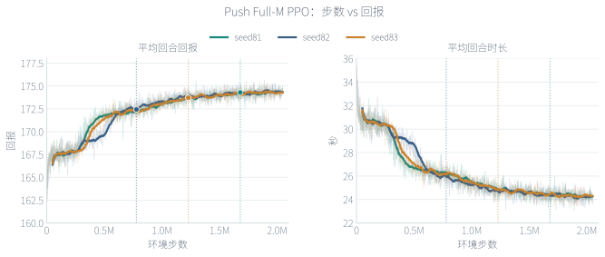
push_so101/train/TRAINING.json、
push_extra_seeds/train_seed82/TRAINING.json、
train_seed83/TRAINING.json。
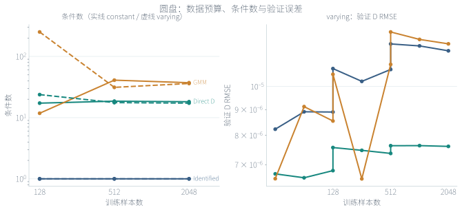
book_disk/fit_diagnostics.json、training_curves.csv（seed41，ordinary）。
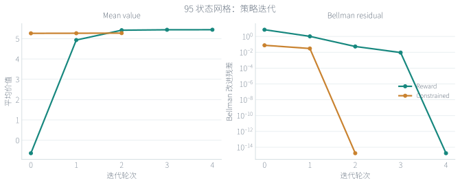
book_grid/POLICY_ITERATION.json（seed41）。
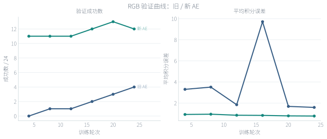
rgb_representation_v2/figures_01/PROVENANCE.json。
任务动画
两段本地 MP4：一段来自 SO101 关节接触仿真，一段是二维双积分器 PD 控制示意。均可暂停、拖动和循环播放。
runs/non_rgb_overnight_20261101_HIhnEVgJ/push_so101/。
输出结构
runs/my_experiment/
config.json # 冻结配置
FROZEN.json # 模型哈希与选择记录
FINAL_STATE.json # 最终状态
events.jsonl # 事件流
checkpoints/ # 训练检查点
validation/ # 验证轨迹与选模
test/ # 独立测试轨迹
replay/ # 回放（按回合）
report/ # 独立报告与图先看
report/REPORT.md- 成功率、成本、到达时间
- 测试变体的配对差异
需要复现时
- 保留
FROZEN.json - 保留
checkpoints/与replay/ - 报告用快照生成
扩展新任务
1. 写 Env
- 状态、观测、物理步进、动作界限
- 成功、失败、保持、时间截断
- 返回正成本；奖励转换放在算法侧
2. 接配置
- 在配置里声明
task、seed、预算 - 复制现有模板，保留
schema与jobs结构
3. 选或写 backend
- 先复用现有 6 个后端之一
- 需要新损失/梯度时再写
create_training_backend
4. 测试
- 单测物理边界与动作约束
- 冻结后做配对测试
GMM-D：局部增量模型
GMM-D 把状态—动作分区后拟合非负局部增量增益，预测形式为：
| 环节 | 接口 / 实现 | 状态 |
|---|---|---|
| 数据 | DiscreteTransitionBatch(state, applied_action, next_state, dt) | 已有 |
| 拟合 | GMMFitter.fit(batch, seed) → GMMTransitionModel | 一维圆盘已适配 |
| 预测 | predict_next(state, action)、memberships(state, action) | 已有 |
| 评价 | predicted D vs observed D；两端分别计算 V | 已有 NumPy 诊断 |
| 适配器 | extensions/book_disk_overnight_v1/contract_adapter.py | 已有 |
| 待做 | 多维 GMR、v4 backend、配置注册 | 待实现 |
L 学习：拉格朗日动力学
L 学习拟合机械系统的拉格朗日结构，再用误差能量和跟踪控制器生成广义力。它不是 Lyapunov critic 的 LAC，也不是现有神经 M 训练。
| 环节 | 接口 | 状态 |
|---|---|---|
| 数据 | MechanicalTrainingBatch(q, velocity, acceleration, applied_force, ...) | 接口已就绪 |
| 拟合 | LagrangianFitter → LagrangianDynamics | 待实现 |
| 模型 | mass_matrix、coriolis_matrix、potential、gravity、inverse_dynamics | 接口已就绪 |
| 控制 | LLearningController + MechanicalReference | 待实现 |
| 能量 | LLearningEnergy | 待实现 |
| 待做 | 结构模型、训练器、跟踪控制器、积分补偿、v4 backend | 待实现 |
把 GMM / L 接入 v4
algos/model_based/ 实现对应协议。RunnerBackend：初始化、采样、预热、逐 epoch 更新、验证、保存/加载、测试。extensions/reproducible_training_v4/runner.py 与 validation.py 注册具体实现。backend: gmm_d / l_learning）、测试和报告字段。docs/GMM_L_LEARNING_INTERFACES.md。
命令参考
| 脚本 | 子命令 | 用途 |
|---|---|---|
| run_unified_training_v4.py | train, preflight, reproduce, compare, report, capture-runtime | 状态、机器人、Push-SAC、RGB、DC 电机 |
| run_observer_training_v5.py | train, preflight, doctor, compare | 三个观测任务 |
| run_joint_certificate_v2.py | push-prepare, push-train, push-freeze, push-test, push-arm, verify, analyze, init-night | Push / SO101 联合成本 |
| run_rgb_book_reproduction_v1.py | train, supervise, worker, validate, report | 书稿室内 RGB |
| run_scratch_applications_v1.py | prepare, run, stage, report, deploy | 从头 Push / SO101 / RGB |
| run_vip_photometric_v1.py | prepare, run | VIP 冻结特征对照 |
| run_dinov2_photometric_v1.py | prepare, run | DINOv2 冻结特征对照 |
| run_book_disk_overnight_v1.py | --smoke / --output | 圆盘四路线 |
| run_book_grid_overnight_v1.py | run | 95 状态网格 |
| capture_linux_run_snapshot.py | --run, --output | 报告前的运行快照 |
最短命令卡
# 基础
python -m stabilization_learning list
python -m stabilization_learning train --config CFG --output RUN
python -m stabilization_learning evaluate --run RUN --seeds 20001 20002
# 统一 v4
python scripts/run_unified_training_v4.py preflight --config CFG --output P.json
python scripts/run_unified_training_v4.py train --config CFG --output RUN
python scripts/run_unified_training_v4.py report --root RUN --output REP \
--process-snapshot SNAP.json --compact
# 观测 v5
python scripts/run_observer_training_v5.py train --config CFG --output RUN
# Push / SO101
python scripts/run_joint_certificate_v2.py push-prepare --output CAL --max-hours 2
python scripts/run_joint_certificate_v2.py push-train --output RUN \
--time-bank CAL/time_bank.json --max-hours 4
python scripts/run_joint_certificate_v2.py push-freeze --runs RUN \
--seeds 81 --output GROUP.json --max-hours 0.1常见问题
| 现象 | 处理 |
|---|---|
ModuleNotFoundError | 激活正确的 venv；先安装两个核心库 |
| CUDA 不可用 | 重装与驱动匹配的 PyTorch；检查 torch.cuda.is_available() |
| MuJoCo 导入失败 | 安装 requirements-simulation.txt；检查 GL 后端 |
| 输出目录已存在 | 换新目录；不要覆盖旧实验 |
| 显存不足 | 减小 batch_size / num_envs；先跑 smoke 配置 |
| preflight 失败 | 按 JSON 报错修配置、任务名或路径，再重跑 |
| 进程未退出就 report | 等写锁释放，再用快照脚本采集 |
延伸阅读
入门
- README.md：安装与最短命令
- docs/TRAINING.md：训练参数与输出协议
- docs/BOOK_TASKS.md：任务与书稿章节对应
深入
- docs/ARCHITECTURE.md：架构与扩展
- docs/ASSETS.md：外部资源与权重
- docs/GMM_L_LEARNING_INTERFACES.md：GMM-D 与 L 学习